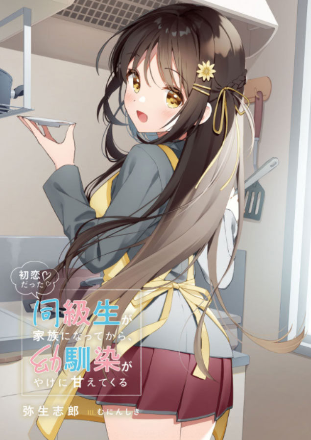

After My First Love Who is My Classmate Became My Family, My Childhood Friend Became Really Sweet to Me
Novel Info's
Status: Completed/Finished
Genre: Comedy, Drama, Harem, Romance, School Life, Slice of Life
Author: Shiro Yayoi
Illustrator: Muninshiki
Volumes/Chapters: 1 Vols, 74 Chaps
Original Publisher: Kodansha, Syosetu
English Publisher: N/A
Fan Translation: Zetro Translation
Description/Sypnosis
Yuto is in love with a girl called Asahina Hinata AKA “The Sunflower Goddess”. Asahina Hinata is very popular among the students and teachers as well. When Yuto found out that his first love Hinata is her half-sister , he thought that he will be broken hearted. But instead, somehow Yuto and Hinata started living together! Since Yuto and Hinata started living together, Yuto’s childhood friend, Tsukino Saya AKA “The Angel of The Moon” became really sweet to Yuto. So then, a romantic comedy with these two girls begins!
Download Links
Epub & Pdf